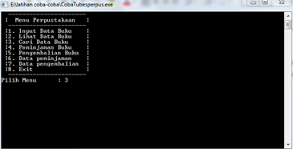

Dalam database management system (dbms) ada yang di sebut transaction. Transaction dalam dbms ini bertujuan untuk menggabungkan beberapa statement perubahan kedalam database menjadi dianggap satu kesatuan. Dilakukan semuanya atau tidak sama sekali (all or nothing) sehingga tidak terjadi ketidakkonsistenan data.. Transaksi mempunyai 2 fungsi utama:
Untuk memastikan integritas data tetap terjaga dan transaksi dapat berjalan dengan baik, maka system database harus menjadi properti-properti yang terdapat didalam transaksi. Properti-properti didalam transaksi ini dikenal dengan istilah properti ACID (Atomicity, Consistency, Isolation, Durability):
Proses Transaksi Peminjaman Buku di Perpustakaan
Tampilan pilihan menu: Pada bagian ini, terdapat beberapa menu yang akan di pilih oleh admin perpustakaan, yaitu:
Program akan login untuk masuk ke menu utama, bila user atau password salah, maka akan tertulis user atau pass salah.
Tampilan pada menu utama setelah login berhasil.
Setelah tampilan menu, user menginputkan angka 1 untuk memasukkan data buku untuk disimpan di dalam program nantinya.
Setelah menginputkan data user akan kembali ke menu awal, kemudian bila memilih menu 2 akan tampil sebagai berikut.
Contoh tampilan lihat view setelah user menginputkan beberapa data buku.
 Tampilan menu bahwa user memilih tiga untuk mencari data
Proses pencarian dengan memasukkan judul buku yang dicari.
Bila pencarian berhasil akan menampilkan letak lemari dan stok buku.
Pada menu peminjaman akan tampil judul buku yang akan dipinjam dan jumlah yang dapat dipinjam.
Pada tampilan view akan menampilkan buku yang telah dipinjam.
Pada tampilan view setelah di lakukan peminjaman jumlah buku akan berkurang.
Data peminjam yang ada setelah dilakukan peminjaman.
Data setelah adanya pengembalian
Berdasarkan contoh tersebut ditinjau kebutuhan ACID-nya, maka:
Jika transaksi gagal pada proses peminjaman buku, maka system harus memastikan bahwa perubahan yang terjadi tidak tersimpan ke database, atau akan terjadi ikonsistensi data. Dengan kata lain, selesaikan transaksi atau tidak sama sekali. Contohnya jika seorang mahasiswa ingin meminjam buku dan telah memilih 5 buku yang ingin dipinjam. Namun kegagalan sistem, proses proses transaksi tersebut tidal berhasil, maka proses transaksi tersebut harus dibatalkan/ tidak dilaksanakan sama sekali. Atau jika tidak maka jumlah buku di system akan terkurang 5, tetapi jumlah diperpustakaan tetap sama (tidak terkurang sama sekali).
Total jumlah buku diperpustakaan harus tetap. Tidak berubah jumlahnya baik sebelum peminjaman maupun setelah peminjaman. Maksudnya dalam hal ini jumlah buku yang tersisa diperpustakaan ditambah jumlah buku yang telah dipinjam.
Jika pada saat proses transaksi peminjaman buku oleh seroang mahasiswa (si A) ada transaksi peminjaman oleh mahasiswa lain (si B), maka akan menyebabkan ikonsistensi terhadap database. Contohnya jika si A meminjam 5 buku (matematika, Bahasa inggris, bahas Indonesia, agama, dan Pkn), sedangkan stok buku pkn yang ada sisa 1, dan belum selesai proses transaski si A, si B juga meminjam buku yang sama, maka akan menyebabkan jumlah buku Pkn lebih banyak 1 buah dari yang seharusnya. Untuk menghindari hal tersebut, maka transaksi peminjaman harus dilaksanan secara serial (satu persatu)
Pada saat eksekusi transaksi peminjaman telah selesai dan si peminjam telah menerima buku yang dipinjam, maka harus dipastikan tidak ada kesalahan system yang akan terjadi yang menyebabkan hilangnya data yang berkaitan dengan proses transfer peminjaman buku.